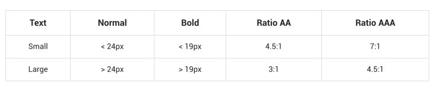
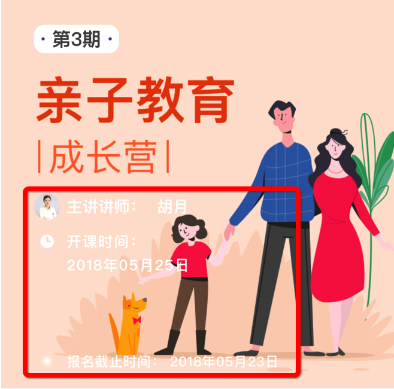
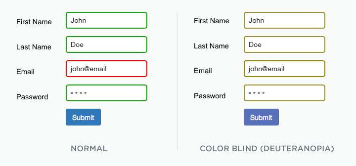
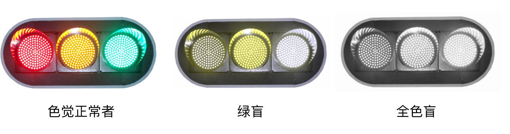
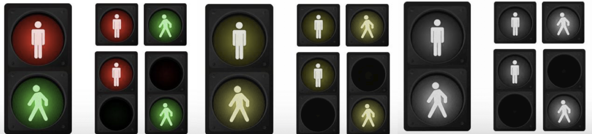
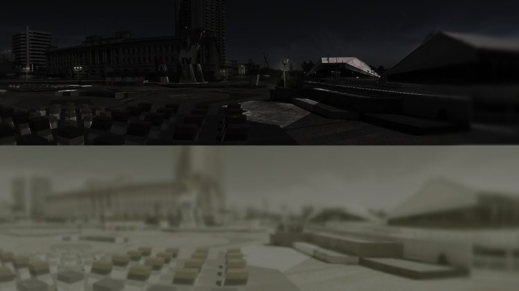
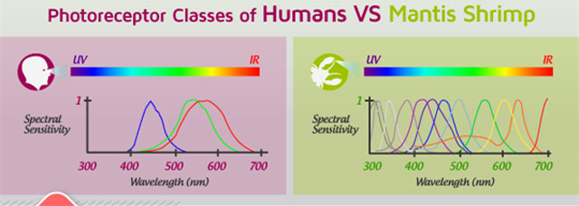

上周，安静的办公室里传来了两位前端程序员之间的争吵。航叔：“这明明是一头鹿嘛。”
悦悦提高了嗓音：“啥？我看到的是牛啊，你咋看的啊？”
原来他们在看每年体检时眼科医生阿姨都会翻给你看的图案⤵
由圆圈轮廓组成的鹿型剪影是航叔眼中的图像，而同一幅画面在悦悦眼中则是一头牛。由此的出，航叔是红绿色弱，而悦悦是色觉正常者。（可以类比上图中的前三张图像）
在统计了高考圈全部25个人后，确定有4位是色觉异常者。他们中也许有人看到的官网是这个样子的。
无论是线上web、app或者线下的物料，都是通过视觉来传达信息，所以一定要满足有视觉障碍的用户。像google、apple这样的大厂已经在设计规范上做了一定的限制，但是作为创业公司，我们没有足够的人力去建立完整的无障碍设计规范。所以提炼了以下两个要点，让我们可以用最小的成本，满足更多的用户。
1.内容展示要与背景拉开足够大的对比——满足最小的对比度。内容为文案、icon、可交互的控件：按钮、tab等
例：红框中的的文字就没有满足与背景的最小对比度 文案字号小于19px bold，属于small，对比度应该满足RatioAAA 7:1。案例中只有Ratio 1.23，这是个连视觉正常者都难以分辨的对比度。 解决办法：加深背景、使用阴影、提亮内容等
2.不能只用颜色传达信息（同样在实体设计里也要做到，例如：信号灯）
  解决办法：别只用颜色区分。适当的加入一些icon或者tooltip 提示
下面是在做UI的时候还需要考虑到的特殊人群
·7-12%的男性有不同程度的色觉缺陷，近1%的女性也是这样。他们当中可能有的人知识难以区分特定组合的颜色
·50%的50岁以上的人有一定程度的低视力
·使用老旧的、低分辨率的显示屏的用户
·强光或弱光环境使用产品的用户
·使用很小的屏幕的用户
Accessible design aids in creating a better experience not just for people with disability, but also for people without it.
通过无障碍设计所创造的体验，不仅仅服务于残疾人士，同时也能让普通用户拥有更好的用户体验。
诚然，美是重要的，但并不是设计的终极目标。在还做设计的日子里，多做一些有设计理论依据的视觉设计，让自己的产品可以服务更多的人群，给用户增加一些愉悦和爽的体验。
以下是题外话：
恐龙灭绝后称霸陆地的哺乳动物都是色盲
在恐龙灭绝后，称霸大陆的哺乳动物都是不能分辨色彩的。后来被挤在树上生活的灵长类动物，他们在吃叶子的时候为了能吃到更多黄色的嫩叶， 逐渐进化出了一些能够分辨黄绿的视锥细胞。随着时间的推进，脱离了动物界的人类祖先，逐渐有分工，有人狩猎、有人采集果实。最早的人们可能是通过大小和形状来判断果实是不是成熟，但是拿回家一吃，还是会有很多酸涩的没有成熟的却被误摘下的果子，所以逐渐进化出可以分辨红绿色的视锥细胞，帮助我们区分成熟与生涩，也让我们更容易发现远方的果实。
那为什么经过了这么多年的，还存在这么高比例的色盲和色弱的基因呢？ 因为色盲和色弱的优势是容易在黄棕色区间中易分辨出伪装的动物、夜视能力特别强（灰度的分辨力强于正常辨色者）。所以说色弱色盲的基因占比高，并不是因为还未及时淘汰，而是因为某些特别的优势才保留了下来。色盲和色弱的祖辈极有可能是部落里的“狩猎者”。
（传闻一战中夜行的侦查军很多都是色弱和色盲的士兵。）
再说一下我们的好朋友皮皮虾，视觉非常好，能够识别出许多人类看不见的颜色以及不同波长的光线，传中的紫外线红外线都看得到。那些让设计师做出五彩斑斓的黑的朋友，不会就是传说中的皮皮虾精吧？
眼睛的进化是一个很有吸引力的的研究课题，如果你感兴趣，推荐你看看wiki上的 《Evolution of the eye》。 喜欢看记录片的童鞋也可以看这个《生命大跃进》，主演是新垣结衣小姐姐哦~